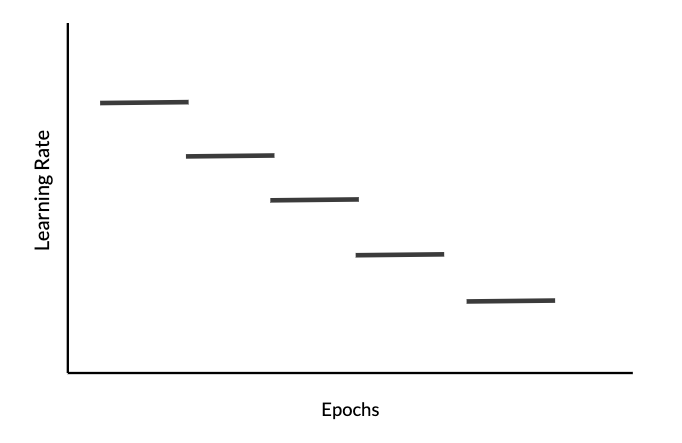

Regularization and Optimization
Lviv University
Parameters to tinker with
Hyperparameters
- number of layers
- number of hidden units in each layer
- learning rates
- activation functions for different layers
Train / Dev / Test sets
- used to be 60/20/20%
- now it’s more like 98/1/1%.
Important
Train and dev sets should come from the same distribution.
Bias/Variance
- High Bias Simple hypothesis, not able to train properly on the training set and test set both. This is Underfitting.
- High Variance. Very complex hypothesis, not able to generalise. Will perform great on training data and poor on the test data. This is Overfitting.
- Just Right: The glorious balance
Bias/Variance
Bias/Variance
Examples
- if training set error is 1%, and dev set error is 11%, then we say we have high variance.
- If training set error is 15%, and dev set error is 16%, then we say we have high bias.
- If training set error is 15%, and dev set error is 30%, then we say we have both high bias and high variance.
- If training set error is 0.5%, and dev set error is 1%, then we say we have both low bias and low variance.
High bias
Solutions for high bias
- bigger network
- train longer
- NN architecture search
High variance
Solutions for high variance
- get more data
- regularization in order to reduce overfitting
- NN architecture search
Bias-variance tradeoff
A machine learning concept. Bigger network and getting more data help to solve the tradeoff problem.
Regularization
Regularization
Definition
Regularization is a strategy used in machine/deep learning designed to reduce the test error, possibly at the expense of increased training error.
Definition 2
Regularization is any modification we make to a learning algorithm that is intended to reduce its generalization error but not its training error.
Regularization
Regularization: penalty-based
\[\begin{align*} &\hat{y} = \sum\limits_{i=0}^d w_i x_i, \\ &L = \sum (y-\hat{y})^2 \end{align*}\]
Soft penalty
Larger value of \(d\) increases overfitting. Decreasing \(d\) = economy of parameters.
Instead of reducing a number of parameters, we can apply a soft penalty.
Regularization: parameter norm penalties
\(L_2\) regularization
Consider logistic regression. We introduce an additional summand:
\(J(w, b) = \frac{1}{m} \sum\limits_{i=1}^m L(\hat{y}^{(i)}, y^{(i)}) + \dfrac{\lambda}{2m}\|w\|_2^2\)
\(\|w\|_2^2 = \sum\limits_{j=1}^{n_x} w_j^2 = w^T w\).
\(\lambda\) is called a regularization parameter.
Regularization: parameter norm penalties
Why don’t we regularize \(b\)
- because it’s just a single parameter, compared to multiple in \(w\).
- the biases typically require less data than the weights to fit accurately.
- fitting the weight well requires observing both variables in a variety of conditions.
- each bias controls only a single variable.
- this means that we do not induce too much variance by leaving the biases unregularized.
- also, regularizing the bias parameters can introduce a significant amount of underfitting.
Regularization: parameter norm penalties
\(L_1\) regularization
\(J(w, b) = \frac{1}{m} \sum\limits_{i=1}^m L(\hat{y}^{(i)}, y^{(i)}) +\dfrac{\lambda}{2m}\|w\|_1\).
Here \(\|w\|_1 =\sum\limits_{j=1}^{n_x} |w_j|\).
Here we end up having sparse vectors for \(w\) - meaning, they will contain lots of zeroes.
Regularization
A general case
For neural network, we add this to the cost function: \[ J(\vec{W}, \vec{b}) = \frac{1}{m} \sum\limits_{i=1}^m L(\hat{y}^{(i)}, y^{(i)}) + \dfrac{\lambda}{2m}\sum\limits_{l=1}^L\|\vec{W}^{[l]}\|_F^2 \] We define the matrix norm (Frobenius norm) as \[ \|\vec{W}^{[l]}\|_F^2 = \sum\limits_{i=1}^{n^{[l]}}\sum\limits_{j=1}^{n^{[l-1]}}\left(w_{ij}^{[l]}\right)^2. \]
Regularization
A general case
New \(dW^{[l]}\) becomes \[ dW^{[l]} = (\text{old one}) + \dfrac{\lambda}{m} W^{[l]}. \]
Weight decay
\(L_2\) regularization is sometimes called weight decay. The gradient descent step: \[\begin{align*} &\vec{W}^{[l]} = \vec{W}^{[l]}-\alpha\left((\text{old one}) + \dfrac{\lambda}{m} \vec{W}^{[l]}\right) = \\ &= \vec{W}^{[l]}\left(1-\dfrac{\alpha \lambda}{m}\right) - \alpha(\text{old one}). \end{align*}\]
\(L_2\) regularizer encourages weight values to decay towards \(0\).
Regularization
\(L_1\) vs \(L_2\)
- accuracy: \(L_2\) wins
- \(L_1\) creates sparse vectors (lots of \(w_i\)s are \(0\))
- this means these components are dropped
- therefore \(L_1\) regularizer acts as a feature selector
Why Regularization Reduces Overfitting?
Why Regularization Reduces Overfitting?
- \(w^*\) - minimum error for \(\lambda=0\).
- when \(\lambda\) > 0, the minimum of the regularized error function \(E(w) + \lambda(w_1^2 + w_2^2)\) is shifted towards the origin.
- This shift is greater in the direction of \(w_1\) because the unregularized error is relatively insensitive to the parameter value, and less in direction \(w_2\) where the error is more strongly dependent on the parameter value.
- The regularization term is effectively suppressing parameters that have only a small effect on the accuracy of the network predictions.
Why Regularization Reduces Overfitting?
- setting large \(\lambda\) helps to reduce \(\|w\|\) to zero.
- therefore, s will also be close to zero.
- \(L_2\)-regularization relies on the assumption that a model with small weights is simpler than a model with large weights.
- thus, by penalizing the square values of the weights in the cost function you drive all the weights to smaller values.
- it becomes too costly for the cost to have large weights! This leads to a smoother model in which the output changes more slowly as the input changes.
Regularization Impact
\(L_2\)-regularization impact
- on the cost computation: A regularization term is added to the cost.
- on the backpropagation function: There are extra terms in the gradients with respect to weight matrices.
- on weights: they end up smaller (“weight decay”): weights are pushed to smaller values.
Ensemble methods
Definition
Bagging (short for bootstrap aggregating) is a technique for reducing generalization error by combining several models. The idea is to train several different models separately, then have all the models vote on the output for test examples.
Ensemble methods
This is an example of a general strategy in machine learning called model averaging.
Techniques employing this strategy are known as ensemble methods.
Rationale
Different models will not make same errors on the test set.
Bagging vs sampling
Bagging
- Sample size \(s\) = training data size \(n\) (classical bagging)
- Resampled data will contain duplicates, and a fraction \((1-1/n)^n \approx 1/e\) is not included at all
- Best results obtained with \(s << n\).
Sampling
- Sample size \(s\) < training data size \(n\)
- Samples are created without replacement.
Randomized connection dropping
Aka DropConnect.
Dropout Regularization
Overview
- for each training example, drop a different set of NN nodes.
- there are several techniques:
- activation scaling
- inverted dropout.
Dropout
Dropout
Dropout Regularization
Inverted dropout
Create a random matrix e.g. for layer 3:
\[\begin{align*} &d3 = np.random.randn(a3.shape[0], a3.shape[1]) < keep\_prob \\ &a3 = np.multiply(a3, d3) \\ &a3 /= keep\_prob \end{align*}\]
This ensures that the expected value of keep_prob remains the same. At test time we’re not using dropout.
Dropout
Features
- Nodes cannot rely on any single feature, as they might go away randomly, so it has to spread out weights.
- Spreading out weights will shrink the squared norm of the weights.
- It’s possible to vary
keep_probby layer. - Dropout is often used in computer vision, as we often don’t have enough data.
Downside
We don’t have a well-defined cost function.
Dropout
Notes
- Dropout is a regularization technique.
- A common mistake when using dropout is to use it both in training and testing. You should use dropout (randomly eliminate nodes) only in training.
- You only use dropout during training. Don’t use dropout (randomly eliminate nodes) during test time.
- Apply dropout both during forward and backward propagation.
- During training time, divide each dropout layer by
keep_probto keep the same expected value for the activations.
Other Regularization Methods
Data augmentation
For example, flip images to generate extra training samples. Or do random distortions.
Other Regularization Methods
Early stopping
- Plot gradient descent. On \(x\) axis we’ll have number of iterations, on \(y\) axis - cost.
- Plot both train set error and dev set error
- And stop before they start diverging.
Other Regularization Methods
Orthogonalization
Orthogonalization: think about minimizing cost and not overfitting separately.
Downside
Downside of early stopping is that it merges these two tasks.
Other Regularization Methods
Early stopping
- Every time the error on the validation set improves, we store a copy of the model parameters.
- When the training algorithm terminates, we return these parameters, rather than the latest parameters.
- The algorithm terminates when no parameters have improved over the best recorded
Note
It is probably the most commonly used form of regularization in deep learning. Its popularity is due to both its effectiveness and its simplicity.
Other Regularization Methods
Noise injection: injecting a matrix of random values from a Gaussian distribution.
Normalization
Normalizing inputs
- First step - subtract mean. \[\begin{align*} & \mu = \dfrac{1}{m} \sum\limits_{i=1}^m x^{(i)}, \\ & x := x - \mu \end{align*}\]
- Then - normalize variance. \[\begin{align*} & \sigma^2 = \dfrac{1}{m} \sum\limits_{i=1}^m (x^{(i)})^2, \text{ (element-wise) }\\ & x := x / \sigma \end{align*}\]
- Normalize train and dev sets similarly, using same \(\mu\) and \(\sigma\).
Normalizing inputs
Impact
- Normalizing the features allows the cost function to look more symmetric, as opposed to elongated.
- Elongated shape forces a smaller
learning_rate.
Normalizing inputs
Vanishing / Exploding Gradients
If we use linear activation function \(g(z)=z\), then we can show that \(y = w^{[L]}*w^{[L-1]}*\dots*w^{[1]}\).
Vanishing / Exploding Gradients
Suppose that weight matrices look like this: \[\begin{align*} & w^{[l]} = \begin{bmatrix} 1.5 & 0 \\ 0 & 1.5 \end{bmatrix} \end{align*}\] Then we’ll have that \(\hat{y} = 1.5^{L-1}x\).
So the value of \(\hat{y}\) will explode. Conversely, if we have 0.5s in the weight matrix, then activation values will vanish.
Same thing will happen to derivatives.
This problem can be solved by careful initialization of the weights.
Weight Initialization for Deep Networks
Suppose we have a single neuron.
So we’ll have \(z=w_1 x_1 + \dots + w_n x_n\).
The larger \(n\) becomes, the less should the weights \(w_i\) be.
We can set the variance of w to be \(\dfrac{1}{n}\) for \(tanh\) (Xavier initialization) (or \(\dfrac{2}{n}\) for ReLU).
Sometimes also this is used: \(\sqrt{\dfrac{2}{n^{[l-1]}n^{[l]}}}\). \[ w^{[l]} = np.random.randn(w.shape)* np.sqrt(1/n^{[l-1]}) \]
Gradient computation
Kinds
- analytical manual derivation. Time-consuming, error-prone.
- numeric calculation using finite differences. Scales poorly. Useful for debugging
- symbolic differentiation. Causes expression swell.
- autodiff
Expression swell
Example
\[\begin{align*} & z = h(w_1 x + b_1) \\ & y = h(w_2 x + b_2) \\ & h(a) = ln (1+ exp(a)) \text{ (soft ReLU)} \\ & y(x) = h(w_2 h(w_1 x + b_1) + b_2)\\ &\dfrac{\partial y}{\partial w_1} = \dfrac{w_2 x exp\left(w_1 x + b_1 + b_2 + w_2 ln\left[1+e^{w_1 x + b_1}\right]\right)}{(1 + e^{w_1 x + b_1})(1+exp(b_2 + w_2 ln \left[1+e^{w_1 x + b_1}\right])}. \end{align*}\]
Autodiff
Idea
Automatically generate the code for gradient calculations, based on forward propagation equations.
It augments the forward prop code with additional variables.
Autodiff
Forward-mode
\[\begin{align*} &f(x_1, x_2) = x_1 x_2 + exp(x_1 x_2) - sin(x_2) \\ & \text { for } \dfrac{\partial f}{\partial x_1} \text {define tangent variables } \dot{v_i} = \dfrac{\partial v_i}{\partial x_1} \\ & \dot{v_i} = \dfrac{\partial v_i}{\partial x_1} = \sum\limits_{j \in pa(i)} \dfrac{\partial v_j}{\partial x_1}\dfrac{\partial v_i}{\partial v_j} = \sum\limits_{j \in pa(i)} \dot{v_j}\dfrac{\partial v_i}{\partial v_j}\\ & pa(i) \text{ being set of parents to node i} \end{align*}\]
Autodiff
Reverse-mode
Augment each intermediate variable \(v_i\) with additional varibles \(\overline{v_i}\).
\(f\) - output function. \[\begin{align*} & \overline{v_i} = \dfrac{\partial f}{\partial v_i} = \sum\limits_{j \in pa(i)} \dfrac{\partial f}{\partial v_j}\dfrac{\partial v_j}{\partial v_i} = \sum\limits_{j \in pa(i)} \overline{v_j}\dfrac{\partial v_j}{\partial v_i}\\ \end{align*}\]
Note
Backpropagation is a special-case of reverse-mode autodiff.
Numerical Approximation of Gradients
Gradient checking
We check analytical gradients numerically.
Gives much better approximation of derivatives (two-sided) \(f(\theta+\epsilon), f(\theta-\epsilon)\) Approximation error becomes \(O(\epsilon^2)\), for one-sided approximation it’s \(O(\epsilon)\).
Procedure
First, we take all our parameters \(W^{[l]}, b^{[l]}\) and reshape them into one data vector \(\theta\).
So the cost function will be transformed in a following way: \[\begin{align*} &J(W^{[1]}, b^{[1]},\dots, W^{[L]}, b^{[L]}) = J(\theta) \end{align*}\] Differentials can also be reshaped into a vector \(d\theta\).
Numerical Approximation of Gradients
Procedure
Then we compute a differential for each \(i\): \[\begin{align*} &d\theta_{approx}[i] = \dfrac{J(\theta_1,\dots, \theta_i+\epsilon,\dots) - J(\theta_1,\dots, \theta_i-\epsilon,\dots)}{2\epsilon} \approx d\theta[i]. \end{align*}\] How do we check? \[ val = \dfrac{\|d\theta_{approx}-d\theta\|_2}{\|d\theta_{approx}\|^2 +\|d\theta\|^2} \]
OK
If \(\epsilon = 10^{-7}\) and \(val=10^{-7}\), then everything’s great.
Not OK
If val is big, gradients should be rechecked.
Numerical Approximation of Gradients
Notes
- Only compute \(d\theta_{approx}\) in debug mode.
- Don’t forget about regularization.
- Grad check doesn’t work with dropout
- Try running at random initialization
Optimization
Mini-batch Gradient Descent
If we split training sets in smaller sets, we call them mini-batches. 
Mini-batch Gradient Descent

Mini-batch Gradient Descent
We’ll denote first minibatch \(X^{\{1\}}\). Same for \(Y\).
for t in 1...5000:
\[\begin{align*} &\text{forward prop on } X^{\{t\}} \\ &Z^{[1]} = W^{[1]}X^{\{t\}} + b^{[1]}\\ &A^{[1]} = g^{[1]}(Z^{[1]})\\ &\vdots \\ &A^{[l]} = g^{[l]}(Z^{[l]})\\ &J^{\{t\}} = \dfrac{1}{1000} \sum L(\hat{y}^{(i)}, y^{(i)}) + \dfrac{\lambda}{2 * 1000} \sum \|w^{[l]}\|^2_F \\ &\text{backward prop to compute gradients of } J^{\{t\}}\\ & w^{[l]} = w^{[l]} - \alpha dw^{[l]},\, b^{[l]} = b^{[l]} - \alpha db^{[l]} \end{align*}\] So we take 5000 gradient descent steps in one epoch.
Mini-batch Gradient Descent

Note
Mini-batch cost will have oscillations, depending on characteristics of mini-batches.
Mini-batch Gradient Descent
- If mini-batch size = \(m\), we end up with batch gradient descent.
- If mini-batch size = \(1\), we end up with stochastic gradient descent. Every example is its own mini-batch.
Note
Stochastic GD will oscillate a lot. Disadvantage is that we lose the speedup from vectorization.
Mini-batch Gradient Descent
Guidelines for mini-batch size
- for small training sets (< 2000), just use batch GD
- typical sizes would be 64, 128, 256, 512, etc.
- training set \(X^{\{t\}}\) should fit in CPU/GPU memory
- mini-batch size is another hyperparameter
Mini-batch Gradient Descent
Momentum: intuition
- Because mini-batch gradient descent makes a parameter update after seeing just a subset of examples, the direction of the update has some variance, and so the path taken by mini-batch gradient descent will “oscillate” toward convergence.
- Using momentum can reduce these oscillations.
- Momentum takes into account the past gradients to smooth out the update. The ‘direction’ of the previous gradients is stored in the variable.
- Formally, this will be the exponentially weighted average of the gradient on previous steps. You can also think of as the “velocity” of a ball rolling downhill.

Exponentially Weighted Averages
Speed
Faster than GD.
Exponentially weighted (moving) averages for yearly temperatures: \[ V_t = \beta*V_{t-1} + (1-\beta)*\theta_t \] where \(v_0=0\), \(\theta_i\) is temperature on day \(i\).
Exponentially Weighted Averages
\(V_t\) averages over last \(\dfrac{1}{1-\beta}\) temperature.
E.g., if \(\beta=0.9\), then \(V_t\) averages over last 10 days.
High values
With high \(\beta\) values, we get a much smoother plot, but shifted to the right, because large \(\beta\) values cause slower adaptation of the graph.
Low values
With smaller \(\beta\) values, the graph is noisier, but it adapts faster.
Exponentially Weighted Averages
Procedure
Recursively expand \(V_{100}\): \[ V_{100} = \sum\limits_{i=1}^100 (1-\beta)\beta^{100-i} \theta_i \] All these coefficients above add up to a number close to \(1\).
We multiply daily temperature with an exponentially decaying function. \[ (1-\epsilon)^{\dfrac{1}{\epsilon}} = \dfrac{1}{e}. \]
Exponentially Weighted Averages
Implementation
\[ v_{\theta} := \beta v_{\theta} + (1-\beta)\theta_i \] Very efficient from computation and memory efficiency points of view.
Exponentially Weighted Averages
Bias Correction in Exponentially Weighted Averages
The problem is that the curves starts really low.
Suggestion
Divide \(v_t\) by \(1-\beta^t\).
Gradient Descent with Momentum
Basic idea
To compute exponentially weighted average of gradients and use that in GD update step. Helps the Gradient Descent process in navigating flat regions and local optima.
Gradient Descent with Momentum
Procedure
On iteration \(t\) we compute \(v_{dw} = \beta v_{dw} + (1-\beta)dw\).
In this formula, we can think of first summand as velocity, second - as acceleration, \(\beta\) - as friction.
Similarly, we compute \(v_{db}\).
Then we update the weights as follows: \[ W := W - \alpha v_{dW}, \, b := b - \alpha v_{db} \] This smoothes out the GD steps. Results in much smaller oscillations in vertical direction, while moving horizontally.
Gradient Descent with Momentum
Gradient Descent with Momentum
Implementation details
On iteration \(t\):
- compute \(dW\), \(db\) on the current mini-batch
- \(v_{dW} = \beta v_{dW} + (1-\beta)dW\),
- \(v_{db} = \beta v_{db} + (1-\beta)db\),
- \(v_{db} = \beta v_{db} + (1-\beta)db\),
- \(W := W - \alpha v_{dW}, \, b := b - \alpha v_{db}\)
Note
We have \(\alpha\) and \(\beta\) as hyperparameters.
Sometimes \(1-\beta\) is omitted.
Gradient Descent with Momentum
Important notes
- Momentum takes past gradients into account to smooth out the steps of gradient descent. It can be applied with:
- batch gradient descent
- mini-batch gradient descent
- or stochastic gradient descent.
- You have to tune a momentum hyperparameter \(\beta\) and a learning rate \(\alpha\).
RMSprop
Definition: RMSprop: acronym for “Root Mean Square prop”.
Vertical oscillations - this is parameter \(b\). \(w\) is horizontal direction. \[\begin{align*} &s_{dW} = \beta s_{dW} + (1-\beta)dW^2, \; s_{db} = \beta s_{db} + (1-\beta)db^2, \\ &W := W - \alpha \dfrac{dW}{\sqrt{s_{dw}+\epsilon}}, \, b := b - \alpha \dfrac{db}{\sqrt{s_{db}+\epsilon}} \end{align*}\]
Intuition
- \(db^2\) is large, \(dW^2\) is small
- So updates in vertical direction are divided by larger number.
- Thus we can use larger \(\alpha\).
We will denote the parameter \(\beta_2\).
Adam Optimization Algorithm
Description
Works across a wide range of DL architectures. It’s a combination of GD with momentum and RMSprop.
Adam stands for ADAptive Moment estimation.
- calculate an exponentially weighted average of past gradients, and stores it in variables \(v\) (before bias correction) and \(v^{corrected}\) (with bias correction).
- calculate an exponentially weighted average of the squares of the past gradients, and stores it in variables \(s\) (before bias correction) and \(s^{corrected}\) (with bias correction).
- update parameters in a direction based on combining information from previous steps.
Adam Optimization Algorithm
Computation
\[\begin{align*} & v_{dW}=0,\, s_{dW}=0 \\ & v_{db}=0,\, s_{db}=0 \\ & \text{on iteration } t \text{ compute } dW, db \\ & v_{dW} = \beta_1 v_{dW} + (1-\beta_1)dW,\\ & v_{db} = \beta_1 v_{db} + (1-\beta_1)db,\\ & s_{dW} = \beta_2 s_{dW} + (1-\beta_2)dW^2,\\ & v_{db} = \beta_2 v_{db} + (1-\beta_2)db^2 \end{align*}\]
Adam Optimization Algorithm
Computation
We also implement bias correction: \[\begin{align*} &V_{dW}^{corrected} = \dfrac{V_{dW}}{1-\beta_1^t},\\ &V_{db}^{corrected} = \dfrac{V_{db}}{1-\beta_1^t},\\ &S_{dW}^{corrected} = \dfrac{S_{dW}}{1-\beta_2^t},\\ &S_{db}^{corrected} = \dfrac{S_{db}}{1-\beta_2^t},\\ \end{align*}\]
Adam Optimization Algorithm
Computation
And the update steps: \[\begin{align*} &W := W - \alpha \dfrac{V_{dW}^{corrected}}{\sqrt{S_{dW}^{corrected}} + \epsilon},\\ &b := b - \alpha \dfrac{V_{db}^{corrected}}{\sqrt{S_{db}^{corrected}} + \epsilon} \end{align*}\]
Adam Optimization Algorithm
Choice of hyperparameters
- \(\alpha\) needs to be tuned
- \(\beta_1\) usually is \(0.1\)
- \(\beta_2\) recommended to be \(0.999\) by authors of the Adam paper
- choice of \(\epsilon\) doesn’t matter much, authors of the Adam paper recommend \(10^{-8}\).
Learning Rate Decay
Clarification
\[ \alpha = \dfrac{1}{1+decayRate\times epochNumber}\alpha_0 \]
We can speed up the learning algorithm by slowly reducing the learning rate over time.
Suppose we have small mini-batches.
decay_rate becomes another hyperparameter.
Another option is exponential decay: \(\alpha = 0.95^{epochNumber} \alpha_0\).
Learning Rate Decay
Some other options:
- \(\alpha = \dfrac{k}{\sqrt{epochNumber}} \alpha_0\)
- \(\alpha = \dfrac{k}{\sqrt{t}} \alpha_0\)
Learning Rate Decay
Learning Rate Decay
Manual decay: works if we train on a small number of models.
Fixed interval scheduling

The Problem of Local Optima
In multidimensional spaces we are much less likely to encounter local optima, but rather saddle points.
Our understanding of these spaces is still evolving.
Plateau - a region where a derivative is close to zero for a long time.